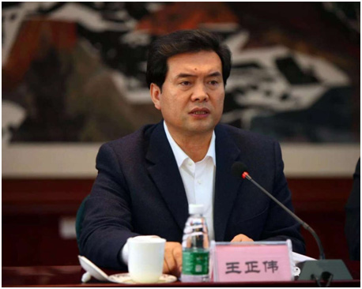

王正伟在“中国民族语文翻译局成立60周年座谈会”上的讲话

12月11日，“中国民族语文翻译局成立60周年座谈会”在北京召开。全国人大常委会副委员长向巴平措，全国政协副主席、国家民委主任王正伟等出席座谈会，并参观了中国民族语文翻译局成立60周年展览。第十届全国人大常委会副委员长热地发来贺信。
王正伟高度评价了中国民族语文翻译局60年来所取得的巨大成绩和作出的突出贡献，并谈了四点感受。
一是中央重视。民族语文翻译局是在老一辈革命家的亲切关怀下成立的，周恩来同志亲自批准、习仲勋同志亲自批示。60年来，党和国家对翻译局工作给予了高度评价，中央领导同志多次作出重要指示。党的十八大以来，习近平总书记等中央领导同志对全国“两会”的民族语文翻译工作多次批示，予以充分肯定。
二是职责重要。民族语文翻译局主要承担党和国家重要文件文献、法律法规和重大会议的民族语文翻译和同声传译工作，是民族语文翻译事业的“国家队”。长期以来，翻译局为党和国家及社会组织提供民族语文翻译服务，是党和国家与少数民族群众之间的重要桥梁。同时，还肩负着推进民族语文规范化标准化信息化的重任，是助推少数民族文化繁荣发展、走向现代化的重要平台。
三是贡献重大。60年来，民族语文翻译局发扬“讲政治、顾大局、一丝不苟、甘于奉献”的优良作风，圆满完成了党和国家交办的各项重大任务，把中央最新精神原汁原味地送到少数民族身边。60年来，翻译局用蒙古、藏、维吾尔、哈萨克、朝鲜、彝、壮7种民族语文，翻译重大会议文件、马列经典著作、重要文献、法律法规等各类图书2.6万多本，翻译量超过4亿字。特别是今年，翻译局和民族出版社合作，完成了《习近平谈治国理政》蒙古、藏、维吾尔、哈萨克、朝鲜等5种少数民族文字版的翻译出版工作，得到中央领导同志高度评价和社会各界热烈反响。
四是人才重地。民族语文翻译局拥有一支政治素质强、业务水平高的多民族、多语种的国家级翻译队伍。目前，有60余人具有高级翻译专业技术职称，8人先后享受国务院政府特殊津贴，3人获国家民委突出贡献专家奖，8人入选国家民委领军人才和中青年英才项目。可谓人才荟萃，人才济济。
王正伟指出，六十年沧海桑田，一甲子春华秋实。在革命、建设和改革的各个历史时期，翻译局的同志们，用手中的笔创造了无愧于时代、无愧于历史的光辉业绩，书写了民族工作史和中华文化史上的壮丽篇章。实践证明，中央设立民族语文翻译局的决策是完全正确的，民族语文翻译局的各项工作是卓有成效的，民族语文翻译局的队伍是值得党和人民信赖的。
王正伟希望民族语文翻译局以成立60年为新起点，进一步发挥好民族语文翻译的重要阵地和桥梁纽带作用，为实现“中华民族一家亲、同心共筑中国梦”的目标任务作出新的贡献，并提出五点希望：
第一，牢记光荣使命，当好中央精神的宣传者。要充分认识到，在我们这个多民族、多语言、多文种的国家里，做好民族语文翻译工作，是事关国家统一和民族团结的大事。特别是，翻译局作为民族语文翻译事业的“国家队”，传递的是中央的声音，可以说是党和国家事业的宣传者、见证者、推动者、参与者，工作的政治性、政策性和敏感性都很强。做好这项工作，必须讲政治、顾大局。要始终坚持正确的政治方向，紧紧围绕“四个全面”的总体战略布局，用习近平总书记系列重要讲话精神武装头脑，把中央有关意识形态工作的决策部署落到实处，不断巩固马克思主义在意识形态领域的指导地位，巩固全党全国各族人民团结奋斗的共同思想基础。要牢牢把握正确的舆论导向，坚定宣传党的大政方针特别是民族理论政策方针，坚定宣传中央各项重大决策部署，把各族干部群众的思想，进一步统一到中央精神上来，不断增强各族群众对伟大祖国、中华民族、中华文化、中国共产党、中国特色社会主义的认同。
第二，提高质量效益，做好民族团结进步事业的促进者。翻译是打通民族间语言障碍的通道，是增进各民族交往交流交融的桥梁，其质量和水平直接关系着民族地区各族群众对党的路线方针政策的准确理解。清末翻译家严复讲，“译事三难：信、达、雅”，“信”就是真、就是原汁原味，这是第一位的。要保持“国家队”的荣誉，必须坚持严谨审慎、精益求精，进一步做好民族文字翻译特别是新词术语翻译工作的规范化、标准化，确保中央决策部署、国家法律法规原汁原味、保质保量地传递给少数民族群众。要努力向表意传神的层次挺进，加强对不同地域、不同民族语言文化的学习、研究，使翻译出来的作品兼具民族性、时代性和大众性，符合本民族群众的阅读、表达习惯，更为群众所喜闻乐见、也更易理解和掌握。要进一步拓宽服务领域、深化合作内涵、丰富合作方式，为各地各部门提供更多优质服务，为少数民族群众提供更多政策信息和精神文化产品，在构建各民族共有精神家园、促进各民族交往交流交融方面发挥更大作用。
第三，推进改革创新，做基本公共文化服务均等化的推动者。创新、共享是十八届五中全会提出的两大新的发展理念，推动基本公共文化服务标准化、均衡化，是“十三五”时期我国发展的重点目标之一。落实新理念、实现新目标，必须发挥改革的牵引和突破作用。要向改革要动力，突出国家民族语文政策和国家语言战略需求，抓住翻译质量提升、人才队伍建设、信息化、基础理论研究等突出问题，破除制约发展的体制机制障碍，推动民族语文翻译事业创新发展。同时要更加主动地适应把握信息时代的新要求，善于运用“互联网+”，创新公共文化服务方式，着力加强民族语文翻译软件研发工程及其应用推广，切实保障各族群众基本文化权益。
第四，服务国家战略，争做最美中国声音的传播者。民族团结故事是中国故事的重要内容，少数民族声音是中国声音的重要元素。讲好中国故事、传好中国声音，要求我们既要做好“民译”，也要做好“汉译”、“外译”。这是建设中华民族共有精神家园、增进各民族交往交流交融的应有之义，也是服务“一带一路”国家战略、提升中华文化软实力的当务之急。多年来，翻译局立足本职、发挥优势，做了大量的工作，但这方面的空间还很大。我们要搞好“一带一路”战略实施，首先要搞好语言相通。要在既有基础上，进一步做好少数民族优秀传统文化和当代作品的“外译”和“汉译”，通过翻译，使少数民族更好地了解国情和世界，使汉族更好地了解国情和少数民族，也让别的国家和地区更好地了解我们的多民族国情和民族政策。特别是，我国有30多个民族与国外历史上的同一民族相邻而居，语言文字相通是我们做好周边国家工作的重要优势。就此而言，民族语文标准化、规范化、信息化的国际意义更加凸显。要加大研究开发力度，加快“走出去”步伐，力争早日实现不同语言文字的智能翻译，以语言铺路、用翻译架桥，为我国经略塑造周边环境、推进“一带一路”战略作出积极贡献。
第五，加强队伍建设，做“三个特别”好干部标准的实践者。明辨大是大非立场特别清醒、维护民族团结行动特别坚定、热爱各族群众感情特别真挚，这是习近平总书记提出的民族地区好干部的标准，也是民族工作部门好干部的标准。要坚决贯彻“三个特别”的标准，继承和发扬老一辈翻译人精益求精、无私奉献的优良传统，努力建设一支政治上更加成熟、业务上更加精湛、作风上更加扎实的民族语文翻译队伍，更好地为党和国家服务、为民族地区和少数民族群众服务。要把人才队伍建设工作当作管根本、管长远的事抓紧抓好，完善招录、培养、引进、选拔、考核和激励机制，增强民族语文翻译工作吸引力，着力加强高层次翻译人才队伍，保证我们的事业后继有人。要切实加强翻译局领导班子建设和党风廉政建设，坚持全面从严治党，履行党委主体责任，按照“三严三实”标准加强干部作风建设，提高业务素质和能力，自觉维护好民族语文翻译工作者的良好形象。
中央统战部、中央文献研究室、全国人大内务司法委员会等有关部门的代表参加了会议。